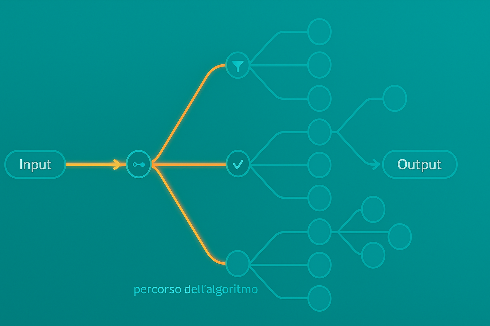

Problema → Analisi → Idea/strategia → Algoritmo → Programma → Esecuzione. L’algoritmo è la procedura generale che, data un’istanza valida, produce l’output corretto.
Un algoritmo è una sequenza finita di istruzioni non ambigue ed eseguibili, ordinate, che trasformano un input in un output.
Vista formale: dato un problema come (I, O, R), un algoritmo è una procedura che,
per ogni i ∈ I, produce un o ∈ O tale che (i,o) ∈ R.
Illustrazione di un algoritmo:
Schema I/O: input → elaborazione (algoritmo/programma) → output.
Una ricetta è un algoritmo: dati gli ingredienti (input), una sequenza ordinata di passi produce il piatto (output). Se i passi sono ambigui (“q.b.”) l’esecutore potrebbe fallire: serve precisione.
MCD (Massimo Comun Divisore): dato un paio di interi a, b (non entrambi nulli), il MCD è il massimo intero positivo d tale che d divide sia a sia b (cioè a mod d = 0 e b mod d = 0).
modL’operatore mod (modulo) restituisce il resto della divisione intera:
a mod b = r se e solo se a = q·b + r con 0 ≤ r < |b|.
Esempio: 17 mod 5 = 2 perché 17 = 3·5 + 2.
L’algoritmo di Euclide per calcolare il MCD si basa su un principio semplice: il MCD di due numeri non cambia se si sostituisce il numero più grande con il resto della divisione per il più piccolo. Quindi:
a e b con a ≥ b.a per b e calcola il resto r = a mod b.r = 0, allora b è il MCD.a con b e b con r e ripeti dal passo 2.Il processo termina dopo un numero finito di passi, perché i resti diventano via via più piccoli fino a 0. L’ultimo divisore non nullo è il MCD.
# Input: interi a, b con a ≥ 0, b ≥ 0, non entrambi 0
# Output: MCD(a,b)
function MCD(a, b):
while b ≠ 0:
(a, b) ← (b, a mod b)
return a
Correttezza: invariante MCD(a,b) non cambia al passo. Complessità: O(log min(a,b)).
Idea del dimezzamento in due passi. Sia a ≥ b > 0. In una iterazione Euclide sostituisce
(a,b) con (b, r) dove a = q·b + r e 0 ≤ r < b.
b ≤ a/2. Quindi in un solo passo il massimo dei due valori
scende almeno a metà.a = b + r con r < b. Il passo successivo confronta
(b,r) e calcola b = 1·r + s con 0 ≤ s < r. Da r > b/2 segue
s = b − r < b/2. Quindi in due passi il massimo scende almeno a metà.Conclusione: ogni due iterazioni il valore più grande si riduce di almeno un fattore 2.
Partendo da M = min(a,b), servono al più 2·⌊log₂ M⌋ + 1 iterazioni
→ complessità in tempo O(log min(a,b)).
Approfondimento (limite “tight”). Il caso peggiore si ottiene quando le coppie
successive sono numeri di Fibonacci consecutivi:
se l’algoritmo usa k passi, allora min(a,b) ≥ F_{k+1}.
Quindi k ≤ log_φ(min(a,b)) + O(1) (con φ numero aureo), che conferma il
comportamento Θ(log min(a,b)).
Intuizione: quando i quozienti sono tutti 1 (divisioni “a resti grandi”), la catena di resti decresce come la successione di Fibonacci: è la sequenza che rallenta di più la riduzione.
Qual è la differenza tra algoritmo e programma? E che ruolo ha l’esecutore?